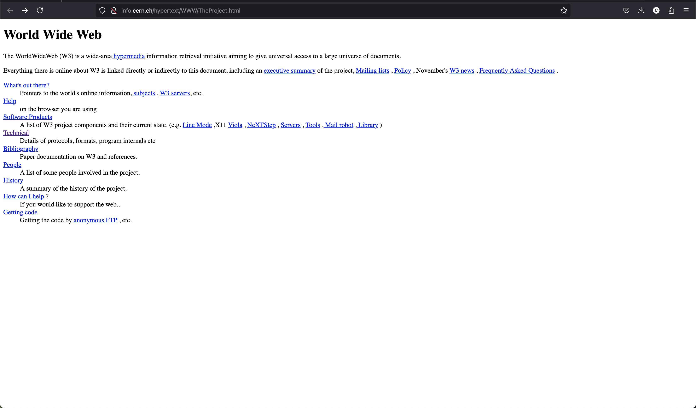

I evoke the term ‘handmade web’ to suggest slowness and smallness as forms of resistance.
— J. R. Carpenter
What is it?
Before: “The Academic Web†🤓
Internet invented as a tool for researchers to share information.

The first ever website, created by Tim Berners-Lee in 1991
Then: “The Handmade Web†🪚
The 90s into the early 2000s, 'personal computers' become a thing, access to the Internet becomes common for people outside academia for the first time.
Typical example of a 90s 'personal homepage'.
Now: “The Corporate Web†📈
Late 2000s to the present day, the rise of 'platforms', massive website who aim to hoard giant userbases so they can hoard and sell their data :(
Facebook, Instagram, TikTok, Reddit...we all know the list.
What does the handmade web look like?
List of thinks that, in my opinion, evoke the handmade web: